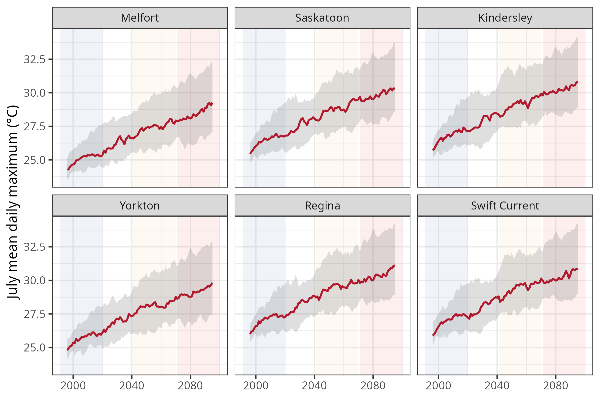
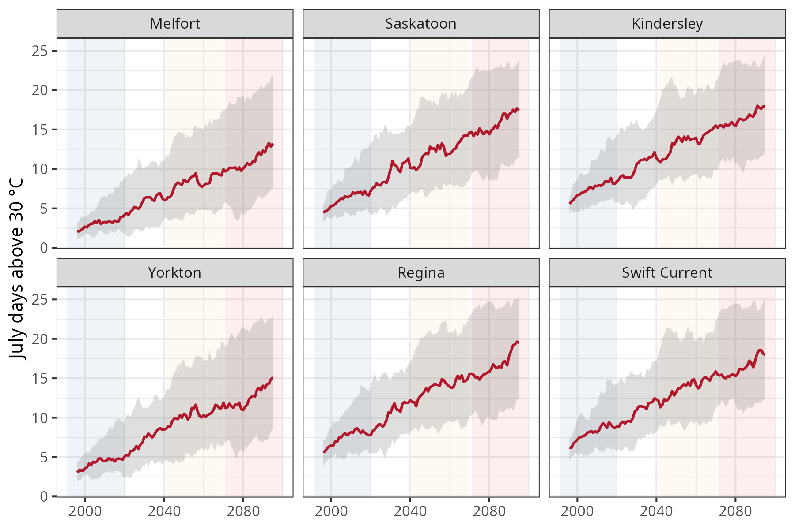
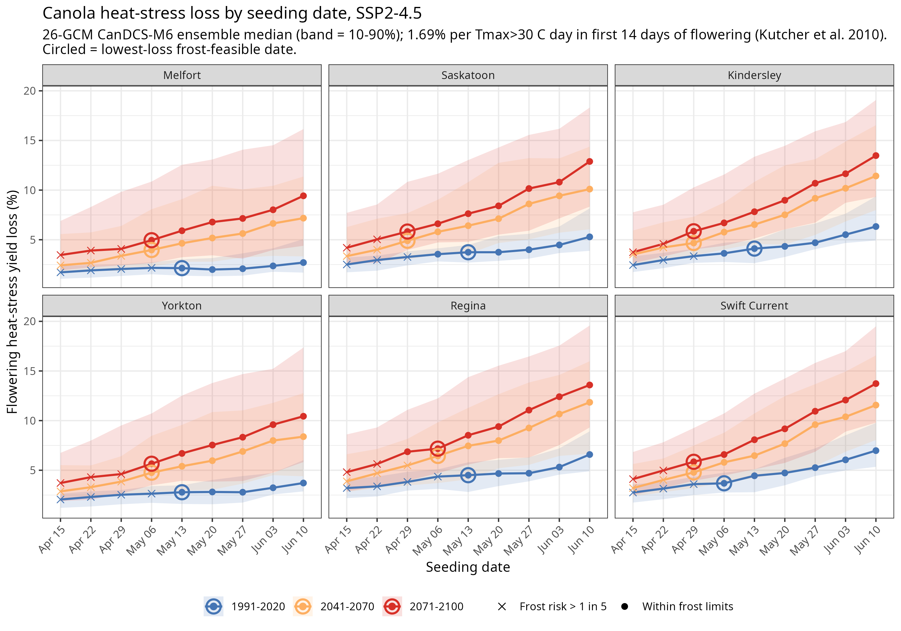
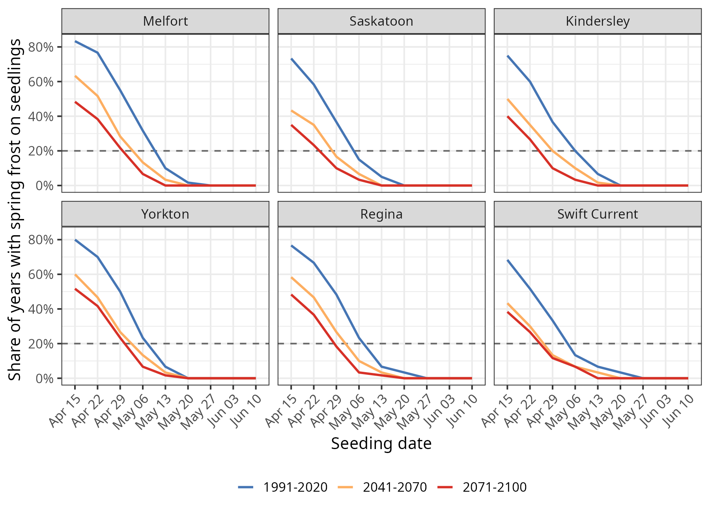

Can Earlier Seeding Help Reduce Canola Heat Stress Losses?
canola, seeding date, climate adaptation, heat stress, flowering, CMIP6, CanDCS-M6, Saskatchewan, spring frost, climate risk
In my previous article, I showed that canola yields in Saskatchewan are sensitive to temperature, and that hotter Julys are likely to cut yields by mid-century. Heat during flowering is the main driver, as hot days cause flower blast and pod abortion.
The Canola Council of Canada already recommends early seeding partly for this reason. Early-seeded canola tends to flower before peak summer heat, and late April to mid-May is generally considered early, depending on the region (Canola Encyclopedia, Time of seeding). The question for this article is whether earlier seeding can help avoid some of these losses.
July is getting hotter
Across six locations in Saskatchewan, the 26-model ensemble under a moderate emissions scenario (SSP2-4.5) projects mean July daily maximum temperatures rising by roughly 3.5 to 4°C by 2071 to 2100, compared with 1991 to 2020. The number of July days above 30°C roughly doubles to quadruples. At Saskatoon, for example, it rises from about 6 days to about 16; at Melfort, from about 3 to about 12.


How the analysis works
For each location, climate model, year, and seeding date, I simulated the canola season using daily temperatures from the CanDCS-M6 downscaled climate projections:
- Seeding dates: weekly from April 15 to June 10, with May 13 as the reference for current practice.
- Flowering: predicted from growing degree days (base 0°C) accumulated from seeding, with flowering starting at 624 degree days (Miller et al. 2001).
- Heat stress: each day above 30°C during the first 14 days of flowering reduces yield by about 1.69%, based on Kutcher et al. (2010).
- Spring frost: a seeding date is counted as affected if temperatures fall to −3°C or below while seedlings are establishing (7 to 28 days after seeding).
- Fall frost: a seeding date is counted as having a fall frost risk if a killing frost (−2°C) arrives before the crop reaches maturity.
- Acceptable risk: a seeding date is assumed to be feasible if both spring and fall frost occur in no more than 1 year in 5. This is an assumed risk tolerance. Producers with lower risk tolerance would need to seed later.
The best seeding date at each location is the feasible date with the lowest heat-stress loss. Results are the median across the 26 climate models.
Earlier seeding consistently reduces heat stress
At every location and in every period, heat-stress loss rises steadily with later seeding. Earlier-seeded canola flowers earlier, before the hottest part of July.

With seeding held at mid-May, heat-stress loss rises from about rises from about 2 to 4.5% today to about 6 to 8.5% by 2071 to 2100, depending on location. Shifting seeding one to two weeks earlier reduces that increase, but earlier seeding does not completely mitigate the increased heat stress.
Spring frost sets how early you can go
Because heat loss keeps falling the earlier you seed, the limit on early seeding is frost risk.

As springs warm, frost risk on seedlings declines, and the window for safe early seeding opens about one to two weeks earlier than today. Fall frost before maturity is not a constraint for any seeding date tested, except very late seeding under today’s climate.
How far the window opens depends on location. In the west and south, April 29 becomes feasible by mid-century. In the northeast, spring frost risk stays higher, so the best date only moves to May 6.
How much of the added heat loss can earlier seeding offset?
The benefit varies widely across the province:
| Location | Soil zone | Best seeding date (2071–2100) | Added heat loss offset |
|---|---|---|---|
| Swift Current | Brown | Apr 29 | ~61% |
| Kindersley | Brown | Apr 29 | ~53% |
| Saskatoon | Dark Brown | Apr 29 | ~46% |
| Regina | Dark Brown | May 6 | ~34% |
| Yorkton | Black | May 6 | ~27% |
| Melfort | Black | May 6 | ~25% |
Earlier seeding offsets about half or more of the added heat loss in the Brown and Dark Brown zones, but only about a quarter in the northeast, where spring frost limits how early producers can seed. This matches current practice. Late April seeding is already fairly common in the Brown and Dark Brown zones, and less so in the Black zone (Canola Encyclopedia).
What it’s worth
To put the avoided heat-stress loss in economic terms, I applied the 2026 Saskatchewan Crop Planning Guide’s canola price of $13.20/bu and its yields by soil zone, using the provincial average yield as the low end and the guide’s target yield as the high end.
| Location | Soil zone | 2041–2070 ($/ac) | 2071–2100 ($/ac) |
|---|---|---|---|
| Swift Current | Brown | 5–8 | 7–11 |
| Kindersley | Brown | 5–7 | 8–11 |
| Saskatoon | Dark Brown | 6–9 | 9–13 |
| Regina | Dark Brown | 3–5 | 4–6 |
| Yorkton | Black | 3–4 | 5–6 |
| Melfort | Black | 3–4 | 4–5 |
By 2071 to 2100, seeding at the earliest frost-feasible date is worth roughly $9 to $13 per acre at Saskatoon, $7 to $11 at Swift Current and Kindersley, and $4 to $6 at Regina, Yorkton, and Melfort. At the high end, that’s about $2,000 per quarter section.
These estimates use today’s prices and yields, and they don’t include the added costs of early seeding, such as earlier flea beetle control or higher seeding rates to offset seedling mortality in cool soils. They count only the reduction in flowering heat stress. The range across climate models is also wide: at Saskatoon in 2071 to 2100, the benefit at target yield ranges from about $3 to $22 per acre between the 10th and 90th percentile of models.
Scaled to Saskatchewan’s roughly 12 million acres of canola, earlier seeding would be worth on the order of $50 to $75 million per year by mid-century and $75 to $105 million per year by late century, based on today’s prices and acreage. This assumes the six locations are representative of the province’s canola area. Because much of that area is in the Black soil zone, where the benefit is smallest, the true figure is likely toward the lower end of this range.
Limitations
- Soil temperature and field conditions are not modelled. The Canola Council of Canada recommends seeding when seed-zone soil temperatures average at least 4 to 5°C, and cold soils after early seeding can slow emergence and increase seedling mortality. Field trafficability, spring moisture, and pre-seed weed control also limit how early producers can seed. The earliest frost-feasible dates here should be read as an upper bound on how early seeding could shift, not as a recommended date for every field and year.
- The loss estimate covers flowering heat stress only. It does not include drought, warm nights, disease, or the other yield effects of seeding date, so it is a heat-stress index rather than a full yield forecast.
- One emissions scenario. Results are for SSP2-4.5, a middle-of-the-road scenario. Higher emissions would increase both the heat losses and the value of adapting.
- The best date is chosen conservatively. Where several dates give nearly the same loss, the date closest to current practice is reported, which slightly understates the benefit at some locations.
The takeaway
Earlier seeding is a real, low-cost adaptation, and climate change is making earlier seeding possible as springs warm. Early seeding will be worth the most in the Brown and Dark Brown zones, where it can offset about half of the added heat stress by late century. But it closes only part of the gap everywhere, and in the northeast, spring frost limits how much it can help. Continued investment in breeding for heat tolerance will be needed alongside adjusted seeding dates.
Methods and data: CanDCS-M6 downscaled CMIP6 projections (26 models, SSP2-4.5); flowering phenology from Miller et al. (2001); heat-stress yield relationship from Kutcher, H.R., Warland, J.S., & Brandt, S.A. (2010), Temperature and precipitation effects on canola yields in Saskatchewan, Canada, Agricultural and Forest Meteorology, 150(2), 161–165; economics from the Saskatchewan Ministry of Agriculture 2026 Crop Planning Guide. This analysis builds on Sorenson, P.T., Mood, B., & Shirtliffe, S. (2025), Future canola yields under different climate scenarios in Saskatchewan, Canada, FACETS, https://doi.org/10.1139/facets-2025-0121.